CASE 1 · BANCO DO BRASIL · 2020
Strategic Design at National Scale
How UX Writing kept Pix stable at Banco do Brasil
- 100%
- Stability, with zero server downtime on launch day
- +1M
- Keys registered in the first 24 hours
- 1 New
- National standard: from “EVP” to “Chave Aleatória” (random key)
30-SECOND SUMMARY
Problem
The Central Bank mandated Pix with a rigid regulatory manual and a short deadline, and millions of people would try to register their keys at the same time.
What I did
I led UX Writing and worked as Product Designer: I translated regulation into BB's language, designed flows and created preventive messages for errors and instability.
Result
Over 1 million keys in 24 hours with no server downtime, and the Central Bank replaced “Chave EVP” with “Chave Aleatória” based on the technical case I prepared.
Overview and challenge
During the pandemic, Brazil's Central Bank mandated the rollout of Pix, the national instant payment system. The context was extremely complex: a rigid regulatory manual full of technical terminology and an aggressive deadline.
The challenge was to translate that bureaucracy into Banco do Brasil's accessible language and to design flows that would prevent server overload while millions of anxious Brazilians rushed to register their keys.
My role
As UX Writer Lead and Senior Product Designer, I was responsible for guiding users through the interface in a simple, intuitive and direct way, ensuring a smooth journey in Banco do Brasil's voice. My main goal was to solve problems through communication, raising the product's usability and clarity.
Activities
Below are some of the activities and stages I carried out in this case.
Kick-off and Stakeholder Interviews
I ran a kick-off with stakeholders to align project goals, map the target audience, define requirements and plan the next steps.Desk Research
With Pix arriving nationwide, I analyzed the Central Bank of Brazil (Bacen) regulation to structure user journeys, write the content and design the screens while preserving Banco do Brasil's service standards. I conducted extensive documentary research on Bacen guidelines, aligned them with BB's Tone of Voice Guide, and led interviews with Business and IT stakeholders to identify potential operational risks.Workshops
To standardize language across the app experience, we ran workshops focused on Banco do Brasil's Tone of Voice guidelines and UX Writing best practices. This ensured verbal consistency and alignment at every touchpoint of the journey.
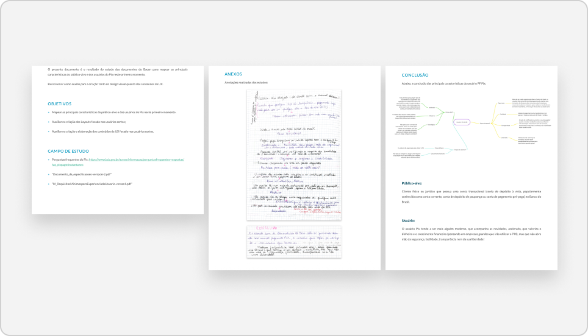
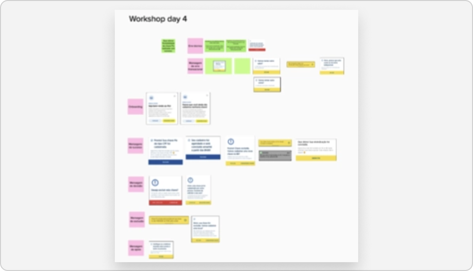
Content Inventory
To map and centralize information, I built a comprehensive content inventory in an Excel spreadsheet. It gathered every mandatory message required by Bacen plus the communications created by the UI team for the Pix area of the Banco do Brasil app.Content Flows and Journeys (To-Be)
Based on the desk research findings, I mapped and designed the journeys required by Bacen. This step was key to structuring the information architecture, spotting bottlenecks and aligning technical requirements for the new payment method.
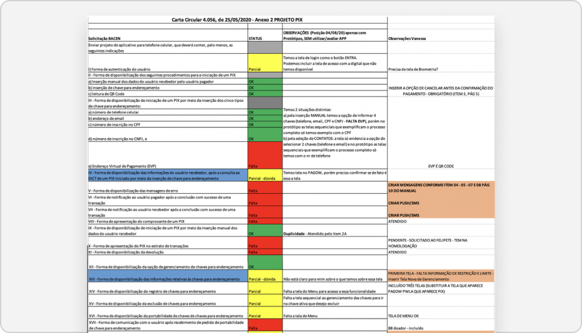
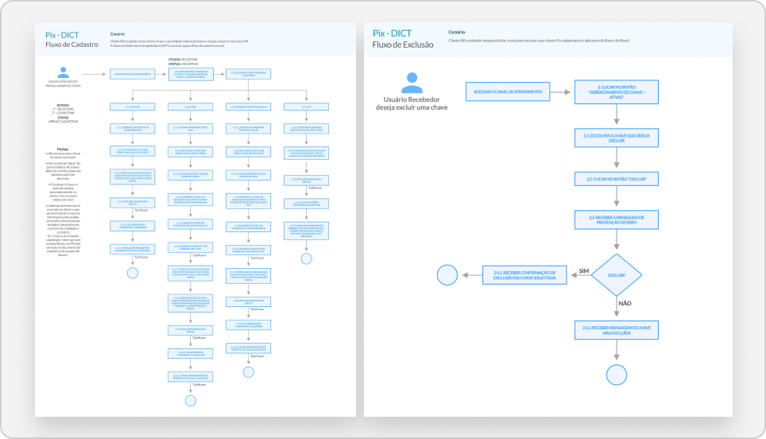
UX Writing Reviews and Co-creation Sessions
To write the messages, we held collaborative sessions with the whole team to generate ideas and review existing material. Through these co-creation workshops on Miro and Teams, I led the UX Writing review of every text, ensuring alignment with business rules and usability heuristics. Even working remotely, we kept the UX Writing team integrated with Banco do Brasil teams and external partners. We moved the texts mapped in the content inventory into the collaborative space for joint rewriting, focused on these pillars:- Compliance with Bacen regulatory guidelines;
- Alignment with Banco do Brasil's verbal identity and tone of voice;
- Fit with the context where each message appears;
- Application of usability heuristics.
Messaging Mockups
To align proposals and get executive approval, I strategically structured mockups of preventive messages for error and instability scenarios, designed to ease user anxiety and prevent request overload on the servers.
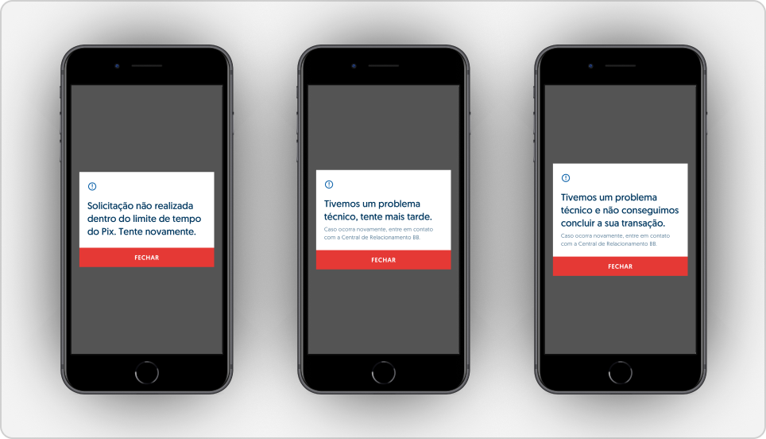
Low-Fidelity Wireframes
To start validating the Pix information architecture in the BB app, I created low-fidelity wireframes and interactive prototypes and shared them on Marvel App for stakeholder review and approval.High-Fidelity Layout
I created high-fidelity layouts based on Banco do Brasil's design system to structure the CPF (taxpayer ID) key registration flow. The main goal was to explore and validate smart key suggestions based on data already in the customer's record, reducing manual effort and making the journey much faster and more intuitive.
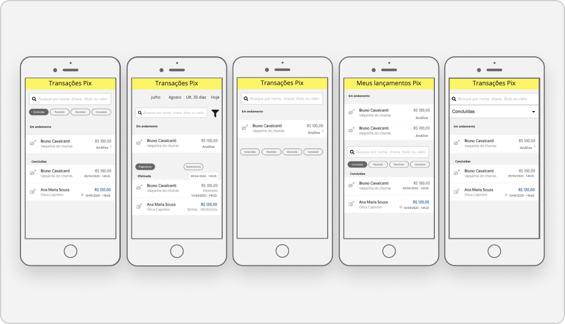
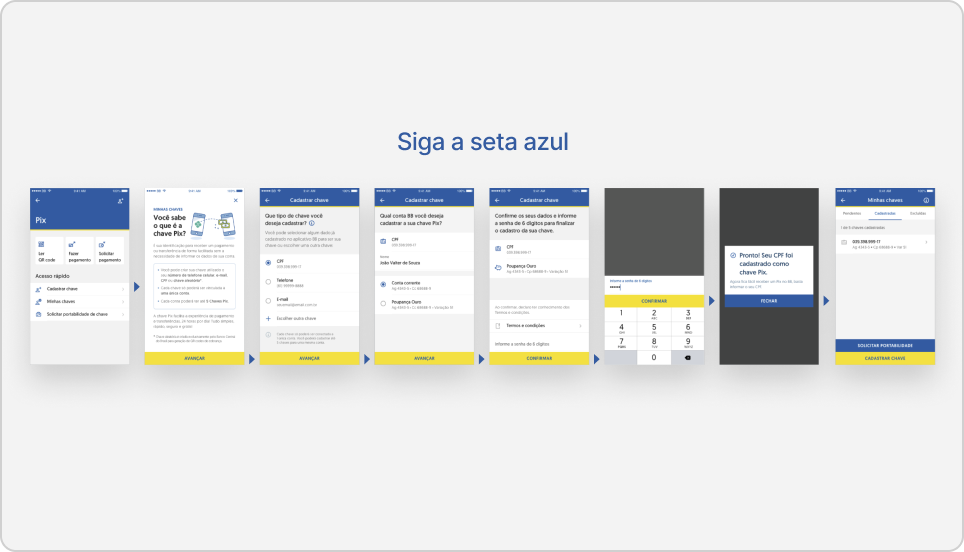
In-Interface Content Documentation for Review and Approval
With the high-fidelity screens ready, I reviewed every text in detail, suggesting improvements grounded in Banco do Brasil's tone of voice and Bacen guidelines. To ensure alignment with business expectations, I built interactive mockups on Marvel App with the flows and their messages applied to the interface. This structure centralized and documented the whole process, letting the people responsible for Pix at BB see the full context, which made asynchronous content approval easier, as well as comments and change requests across areas.
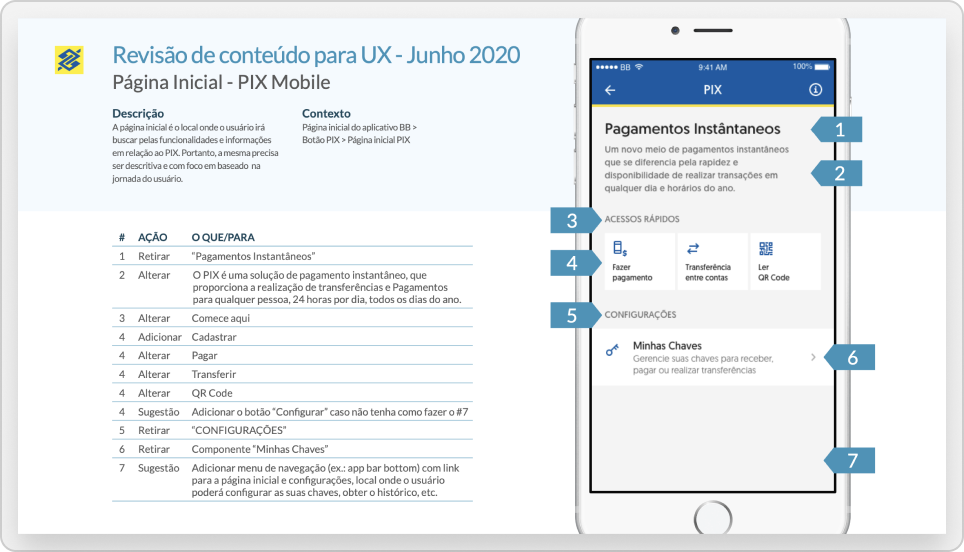
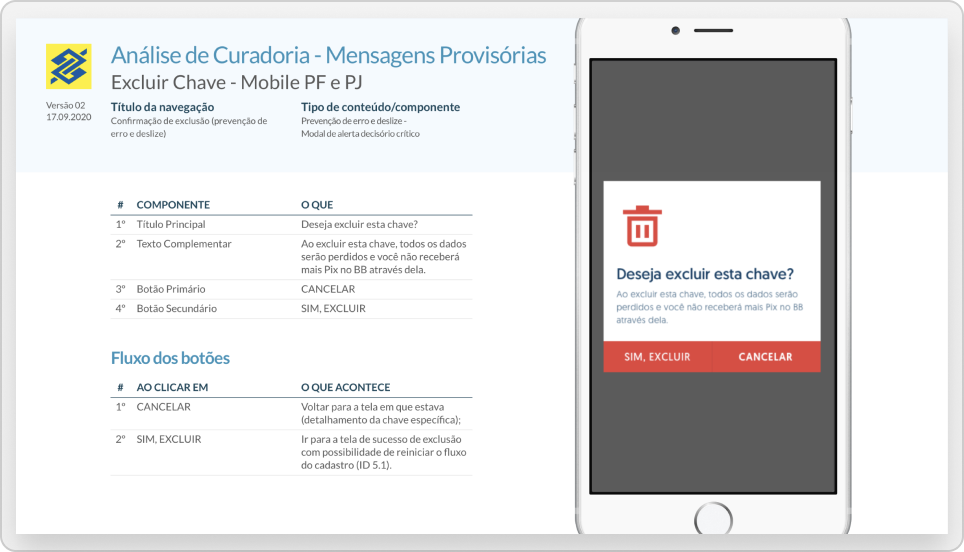
Usability Testing Focused on Writing
To validate the new content, the team ran remote usability tests on Lookback, focused on message clarity and reception. I followed the sessions as an observer, paying attention to participants' verbal and facial reactions as they read, to assess whether the communication delivered a smooth experience and simplified using Pix in the Banco do Brasil app. The sessions showed that the term “Chave EVP” was ineffective and not understood, and I used those findings as the basis for the technical case. The team's process had four stages:- Planning and script;
- Volunteer recruitment;
- Test moderation;
- Consolidated report with SUS score.
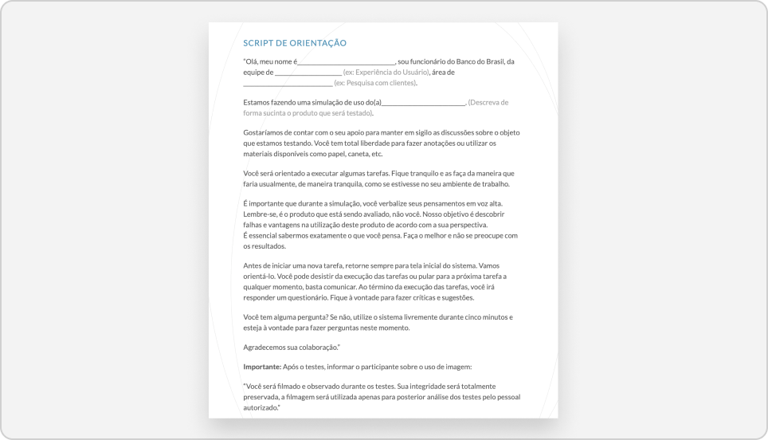
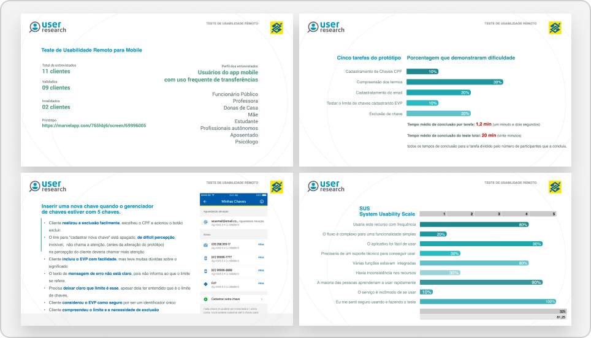
Technical Case
Based on these findings, I prepared a strategic technical case for Banco do Brasil to present to the Central Bank. It secured approval for the official change of the term “Chave EVP” to “Chave Aleatória” (random key), along with other essential technical adjustments.Content Audit
With all content transcribed and linked to the prototypes in the spreadsheet, we ran the analyses on Miro and I validated the flows with customers and stakeholders. I then structured a content audit spreadsheet with the messages adjusted after usability testing and the updated prototype links. This single source streamlined the developers' work: texts could be copied straight into the code, eliminating rework and inconsistencies.Handoff
Working directly with developers, I shared the detailed Content Audit and provided continuous follow-up and support for each message inside the development environment.
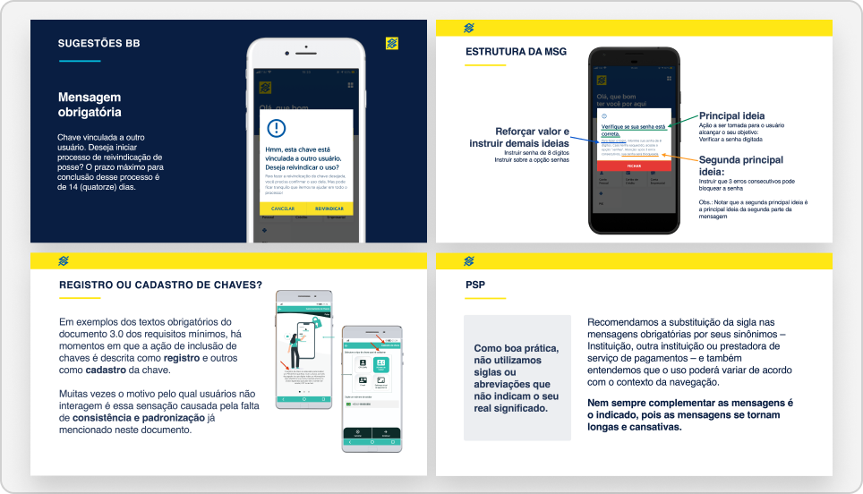
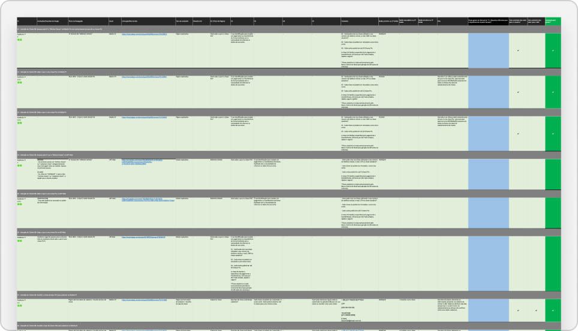
Results

Infrastructure Protected by Design
By designing preventive messages, we eased user anxiety. This UX Writing decision avoided compulsive refreshing and kept the system stable enough to process over 1 million registrations in the first 24 hours.
Regulation
Usability tests revealed that “Chave EVP” caused strong friction. I led a data-driven technical case that convinced Bacen to adopt the term “Chave Aleatória” (random key).
Business
While competitors faced instability, BB stood out in the press (Folha and Veja) as the only major bank whose app ran without failures on Pix launch day.
Scalability
The conversational architecture and clarity established for Pix became the basis for extending the quick-resolution model to other channels, such as chatbots, web and internal systems.
Learnings
User Advocacy Beats Bureaucracy
Challenging regulation (such as Bacen's initial rule) requires strong grounding in qualitative data. When usability testing proves the friction, design strategy becomes undeniable in boardrooms and federal agencies.
Preventive Communication as Crisis Management
Designing for waiting, error or system latency goes beyond good usability: it is a powerful public relations strategy, able to reposition a brand against competitors on the day of its biggest launch.
Content Audit as a Bridge Between Silos
Content inventory and audit are not bureaucratic spreadsheets. They are the tools that guarantee what Design validated with the client is exactly what developers ship to production, eliminating rework and noise.
UX Writing Is an Engineering Tool
Well-chosen words in the interface protect a company's technology infrastructure. Content design can literally save servers from overload.